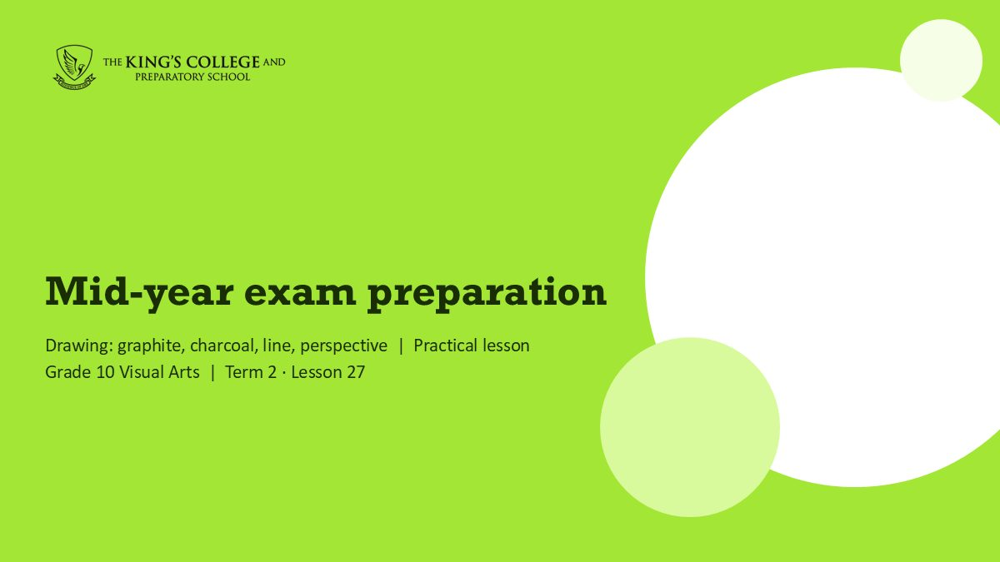

Term 2 · Lesson 27 · Practical lesson
Mid-year exam preparation
Start here
Today I will
- Understand what the practical exam assesses
- Plan my composition with thumbnails and references
- Draw up a materials list and a time plan
Think first
If you had three hours to make your best drawing ever, what would you want to have decided before you walked in?
Words to Know
| Word | Meaning |
|---|---|
| Exam brief | The written instructions for the exam: theme, requirements, media, size, time and assessment criteria. |
| Planning | Working out your idea, composition, references and materials before the exam. |
| Time management | Dividing the exam time into stages so you finish the work well. |
| Thumbnail | A small, quick sketch used to try out composition ideas. |
| Reference material | Your own photographs and sketches used to draw accurately. |
Slides

Notes
Last check before the practical exam: materials, prepared composition, time plan and reference photos.
Reading the exam brief
- Theme and task: Underline exactly what you must make and the theme it must respond to.
- Requirements: Note the size, media allowed and what must be handed in with the artwork.
- Assessment criteria: Typically: concept, composition, technique and use of media, and overall impact. Check the brief.
- Preparation allowed: Find out what reference material and preparatory work you may bring into the exam.
Preparing well
- Thumbnails: Draw at least three small compositions; choose the one with the strongest focal point and balance.
- Reference photos: Take your own photos of the subject with clear light from one side, from the chosen viewpoint.
- Test the media: Make small swatches with the media you plan to use, like the skills practised this term.
- Materials list: List everything you need and pack it the night before.
- Time plan: Divide the exam time: layout, main tones, detail, final check, with times next to each stage.
Remember
A good exam drawing is planned before the pencil touches the paper.
Practical
You need: Exam brief, planning template, VJ, pencils
My exam plan
- Highlight the task, requirements and criteria on your exam brief.
- Write your idea in two sentences: subject, mood and why it fits the theme.
- Draw three thumbnails and circle the strongest; note why.
- Plan your reference photos: subject, viewpoint and light. Take or list them.
- Write a materials list and test one or two media in a small swatch.
- Write a time plan for the exam with the stages and the minutes for each.
- Check your VJ is complete and labelled, and hand it in for final marking.
Test yourself
- Name two things you must find in the exam brief.
- Why draw thumbnails before the exam?
- What should a time plan include?
Show answers
1. Any two: the theme and task, size and media, what to hand in, assessment criteria, preparation allowed. 2. To test compositions quickly and choose the strongest one before committing. 3. The stages of the work (layout, tones, detail, final check) with the minutes allocated to each.
Finished early?
Exam time plan
Turn the exam session into a clear schedule.
- Write the total exam time at the top of a VJ page.
- Divide it into four stages: layout, main tones, detail, final check.
- Write the minutes for each stage, making sure they add up.
- Draw one 3 cm thumbnail of your idea next to the plan.